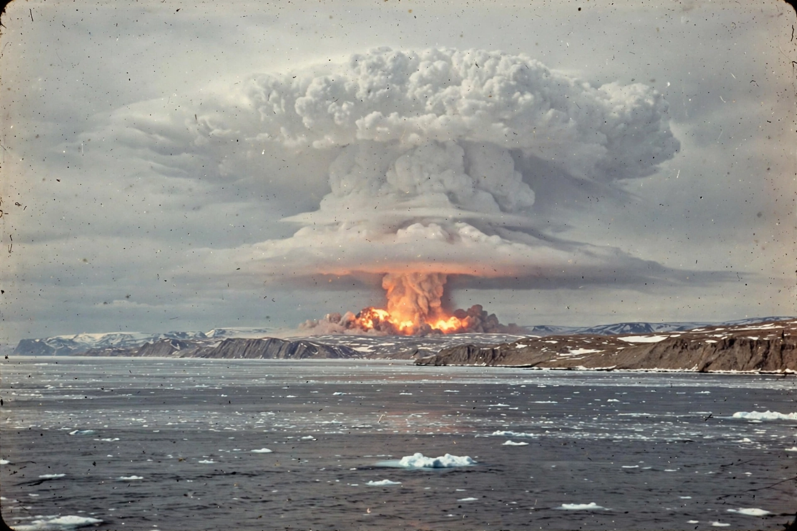

Tsar Bomba
From Wikipedia, the free encyclopedia

[Image: The Tsar Bomba mushroom cloud over Novaya Zemlya, 30 October 1961]The Tsar Bomba mushroom cloud over Novaya Zemlya, 30 October 1961
The Tsar Bomba ("King of Bombs") was the most powerful nuclear weapon ever detonated: a Soviet thermonuclear bomb tested over Novaya Zemlya in the Arctic on 30 October 1961, with a yield of about 50 megatons of TNT.
The three-stage device, developed under the direction of a team including Andrei Sakharov, was designed for 100 megatons; the yield was halved by replacing the uranium tamper of the final stage with lead, which also made it — proportionally — one of the "cleanest" bombs ever tested, with most energy from fusion. The bomb was so large it required a specially modified Tu-95 bomber, and was dropped by parachute to give the crew a chance to escape; the fireball still nearly reached the ground and the shock wave circled the Earth more than twice.
The test was a demonstration of capability at the height of the Cold War rather than a practical weapon design. It helped build momentum toward the Partial Test Ban Treaty of 1963, which ended atmospheric nuclear testing by the US, USSR and UK.